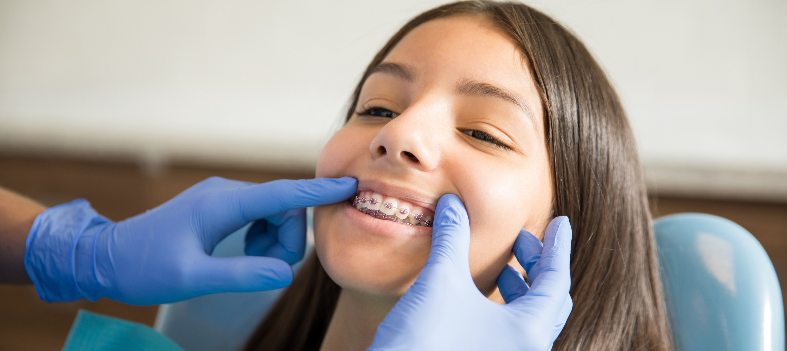
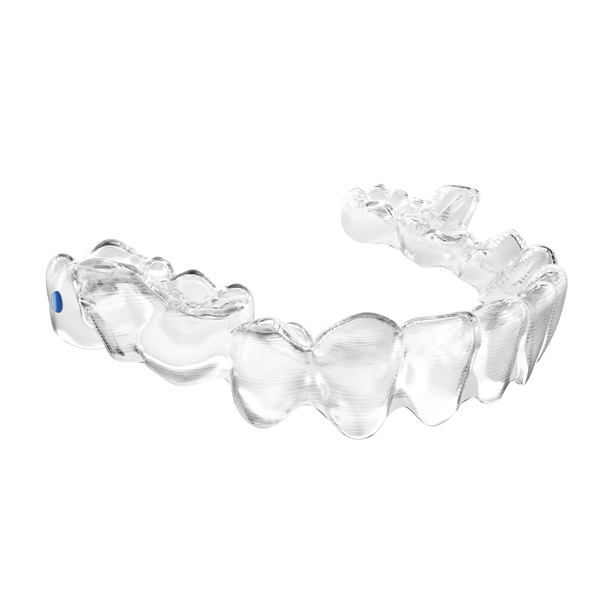
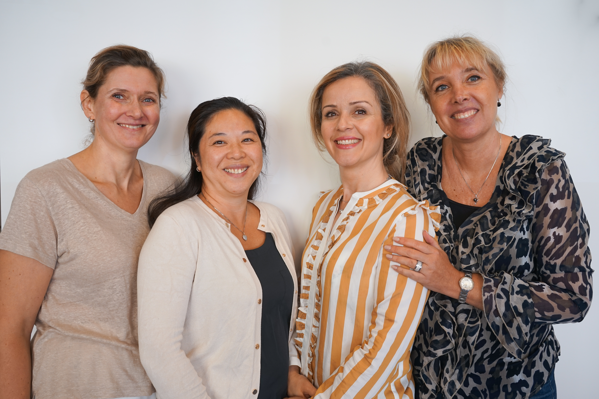
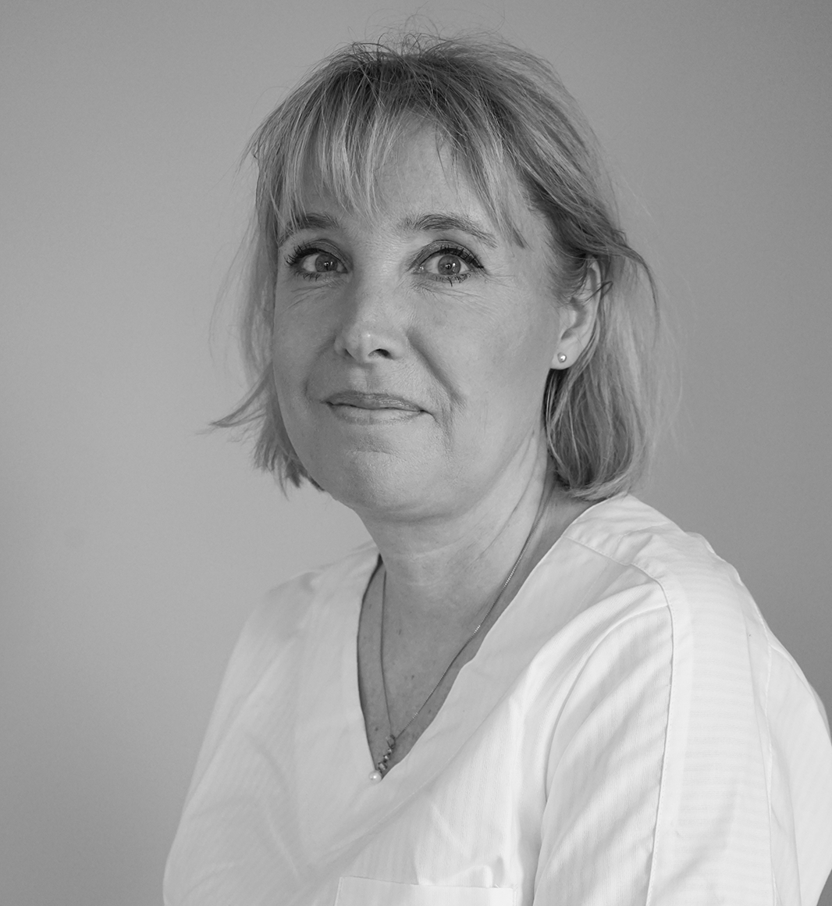

01 / TANDREGLERING
Tandställning
Vi arbetar med både synliga och diskreta tandställningar och planerar behandlingen utifrån din bettavvikelse.
Läs mer om tandställning ↗
Allt inom tandreglering, ortodonti och estetisk tandvård. Hos oss möts du av specialistkompetens och ett personligt bemötande.
Inga aktuella meddelanden just nu.

Vi arbetar med både synliga och diskreta tandställningar och planerar behandlingen utifrån din bettavvikelse.
Läs mer om tandställning ↗
Genomskinliga, avtagbara skenor som kan vara ett alternativ till fast tandställning.
Läs mer om Invisalign ↗Vi undersöker tändernas förutsättningar och erbjuder individuellt anpassad tandblekning.
Läs mer om tandblekning ↗
Vi är en varm och personlig tandregleringsklinik med ett bra läge i centrala Ängelholm. Vi vill att varje patient ska känna sig välkommen, få tydlig information och bli väl omhändertagen.
På vår digitaliserade klinik använder vi 3D-skanning av tänder och bett. Det är ett modernt alternativ till traditionella avtryck som vissa tycker känns obehagliga.
Läs mer om kliniken ↗Vi samarbetar med Dental Ortho Beauty Clinic i Helsingborg och Borgska Villans Specialisttandvård i Lund. Genom samarbetena kan vi bland annat hjälpa patienter som behöver mindre kirurgiska ingrepp.
I Lund finns även möjlighet till apnéskena för patienter med remiss från öron-, näs- och halsmottagning.
Kötider kan variera. Har du fått en betalningsgaranti från Region Skåne ska den skickas till kliniken med post innan det första besöket.
Så skickar du in din betalningsgaranti ↗
Kontakt och tidsbokning ↗Specialisttandläkare i ortodonti
Specialisttandläkare i ortodonti

Ortodontiassistent / koordinator
Ortodontiassistent
Receptionist / mediaansvarig